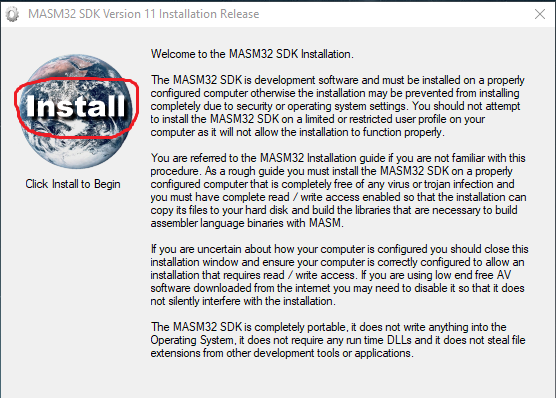

Having been roughly aware of what 16-bit assembly language is and how it works, I started to attain some knowledge about 32-bit assembly language. However, the setup of environment for win32 assembly programming was rather tricky. This article is mainly about one method I used to successfully set up the environment under Win10.
For the setup of VS Code, I will write one standalone article in the future.
Firstly, download MASM32 SDK from http://www.masm32.com/
(remember to select the most closed server to download).
Then, unzip the compressed file and run install.exe

Choose the installation partition (I choosed C partition).
Click OK or whatever all the way down, and wait while building.
Finally, you will get the Installation success window proving that you have successfully installed the masm32. Press any key to continue.
Masm32 ships with a little editor which we don't need because we have better choice(VS Code). Just close it.
At last, you must set your Environment Variables at masm32/bin in order to use ml, rc, link commands directly in the cmd.
For that, use shortcut win+s and Type path , and then type Enter to get into the System Properties window. Click the Environment variables bottom.
Add your masm32 path (like "C:\masm32\bin") to the path variables.
Click OK bottom three times, and the Environment Variables is set.
After you have found or downloaded the file nmake.exe, you can simply duplicate it into the masm32/bin folder where you have set your path at.
Now, the environment for win32 assembly programming is established. We are about to have a test.
Make a folder to store your code. In my case, I used C:\masm32\Source.
Under the directory, make an folder called "HelloWorld" for our test code.
Here in the code, I used the abosulute path for the libs and incs , you should change them according to your own path.
Open cmd under the current directory.
Type rc helloworld.rc to compile the resource file.
Type ml /c /coff helloworld.asm to compile the asm file.
Then, type link /subsystem:windows helloworld.RES helloworld.obj to get the final execuatable file
Type helloworld.exe to run the executable.
(ignore the error codes)
By using nmake, you can simply create a "MAKEFILE" file under the current folder, and just Type nmake to get everything done.
last modified (2019-05-10)